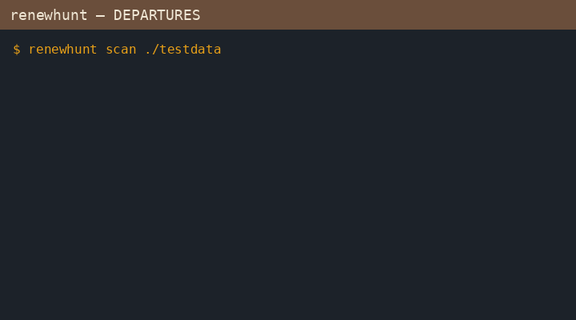

01 · Why this board
On 7 Oct 2026 Let's Encrypt announced 64-day certificates. Staging starts 14 Oct 2026; production 10 Feb 2027; then 45-day. They told operators to grep for hardcoded 83, 80, or 60 in cron, wrappers, and runbooks. renewhunt runs that hunt, classifies each hit, checks ACME clients / ARI, and lists renew timers — read-only, one binary.
Not certfan (live multi-IP TLS sameness). This audits renewal automation config.
03 · One departure
$ renewhunt scan .
SCAN files=42 skipped=8 findings=3 worst=BLOCKED
SEV FILE:LINE MATCH REASON
BLOCKED cron.d/certs:2 --days 80 past 64-day expiry…
$ echo $?
1
Default renewhunt runs scan + clients + timers. Use -json in CI. Exit 1 on any BLOCKED.

04 · Arrivals check
$ renewhunt live example.com api.example.com:8443
LIVE hosts=2 worst=RISKY
SEV HOST LIFETIME USED LEFT ISSUER REASON
OK example.com 64d 31% 44.1d Let's Encrypt already on a 64-day-class certificate…
RISKY api.example.com:8443 90d 84% 14.4d Let's Encrypt past the ⅔ renewal point and still served…
Config can look right while the server still serves a stale cert. renewhunt live (or -check-live host,… on the default run) reads each served leaf and checks lifetime, age, and whether renewal is landing near ⅔. It only talks to the hosts you name, never to a CA.